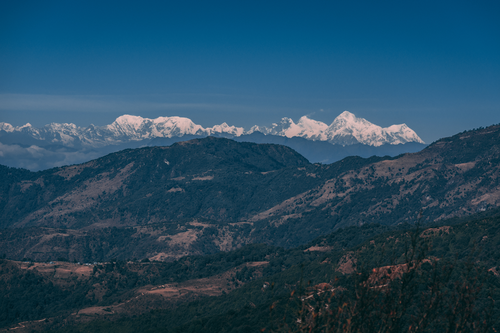
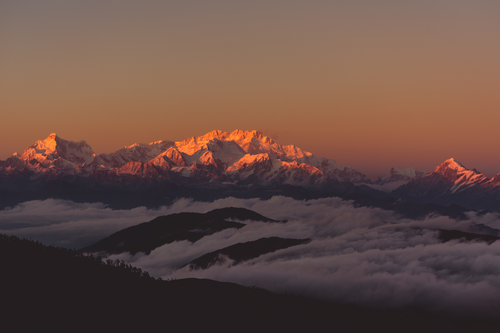
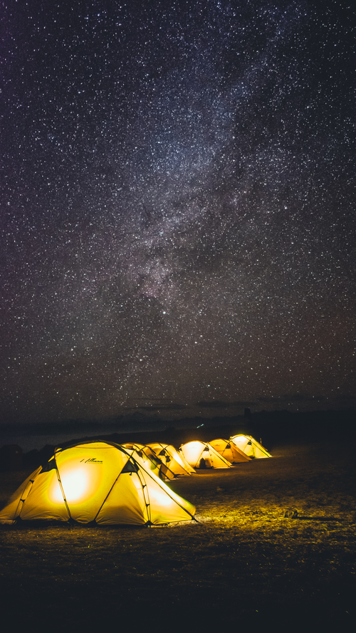
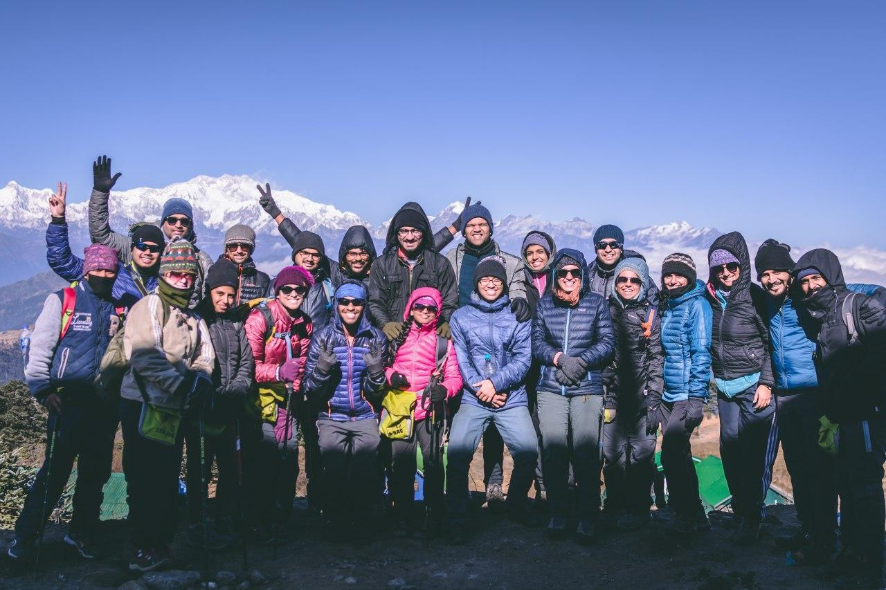
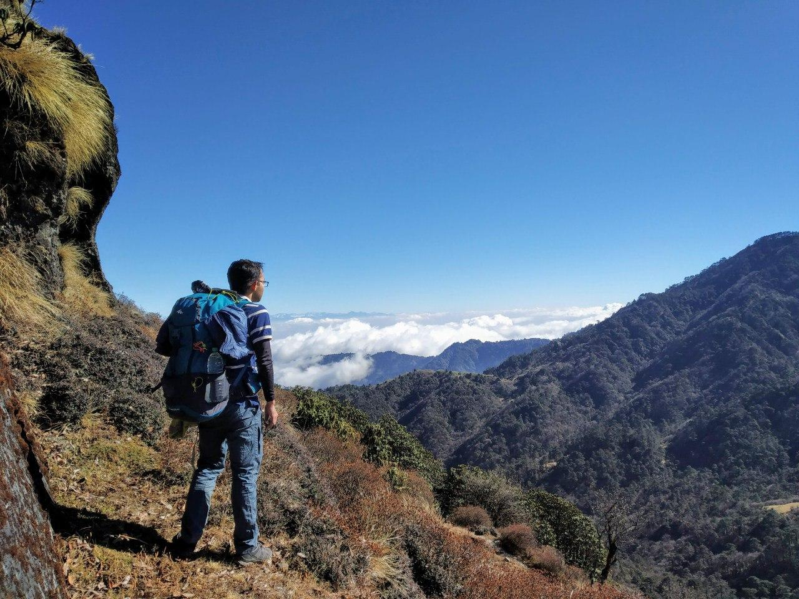

Growing up I've always been interested in trekking; So, naturally when a friend suggested that we should go for a trek in 2018, I was kinda skeptical and kinda excited. Skeptical mainly because it was a significant amount of money including all the equipment I had to buy for a high altitude trek in the winter; and excited because it was a trek. My very first trek. I had a lot of expectations in my head.
Why Sandakphu ?
My friend and me wanted to go for a different trek but we couldn't get the booking in time. So we choose Sandakphu. Apart from that Sandakphu was on our radar mainly because of the length of the trek and the good reviews. Both of us wanted to do something that was a challenging and lengthy so after Goechala; Sandakphu fit the bill perfectly.
Preparation
The preparation of this trek involved two parts mainly.
Firstly, I had to prepare myself physically for the trek. I was not too worried about the physical part since I walk a lot on a regular basis and I also started running after moving to Mumbai.
However for this trek I needed to buy some rather expensive equipment. I needed to buy one rucksack, and some clothing for the low temperature and shoes. The clothing was most important. I did not want to buy something too expensive and too specialized for the trek. I wanted something more versatile.
Buying the rucksack was easy. I bought a 60L pack. I really wanted to buy a 70L but realized that it would be too much.
Buying the clothing was more fun! When you are selecting clothing for treks, you want to be as efficient as possible because everything you own, you have to carry it yourself. One of the techniques is to use layering. There are plenty of good websites online that talk about layering (fyi. the layering information on IndiaHikes site is shit and absolutely not reliable).
The layering can be quite complicated but ultimately it boils down to minimizing the loss of heat (clothes do not generate heat, instead they keep you warm by minimizing heat loss). So tl;dr I bought two polyester base layers and one hollow-fill jacket from decathlon. The hollow-fill jacket was good enough for heat but under certain extreme windy conditions I did find it a bit too cold as it is not completely wind-proof. But it was good enough for this trek.
For shoes I decided to rent a pair from IndiaHikes.
The Trek
The trek was from 22nd to 28th of December. We picked this batch hoping that we would get extreme cold temperature.
On 22nd we met the rest of the team the NJP station in West Bengal and we started off to Jaubhari. Jaubhari is the IndiaHikes base camp for the Sandakphu trek. At Jaubhari we were briefed about the trek by our trek leader. I was really surprised to know about the various activities that IndiaHikes does on the mountains to make the treks more sustainable. Someone from IndiaHikes also briefed the entire team about the benefits of using menstrual cups which I found really cool! After this out medical parameters were checked and recorded, followed by some dinner. Jaubhari is at 2134 meters.
At Jaubhari we also received our rented equipment. I rented a shoe but for some reason I could not feel comfortable in them. They felt different. So against the advise of the trek leaders and other fellow trekkers I decided to continue the trek in my regular shoes.
One 23rd, we reached Tumling which was at 2970 meters. The trek was fun. We stopped in the middle of the trek for lunch. At Tumling the temp was somewhere around 2-5 C.
On the way to Tumling the waist belt of the pack of a fellow trekker got ripped. At Tumling we managed to get hold of some needle and thread and stitched the ripped belt. It was a hacky job but the belt worked till the last day of the trek. Note to self: Carry needles and nylon thread.
One thing that was constant throughout the trek were the view of the Everest on the left and Kanchenjunga on the right. We could see them everyday, which is a welcome change from the normal stuff we are used to seeing everyday. :-P
Lhotse, Everest, Makalu peaks from the right.

The weather was quite cold which was quite enjoyable for me. I went for a walk after dinner to experience the cold and also to test my jacket. I did remove my jacket for a bit and it got too cold too fast. The jacket was doing its job perfectly and I was satisfied with my purchase. :-P
On 24th we reached Kalipokhri which is at 3170 meters. I do not remember the details of this days trek. I do remember that at Kalipokhri all of us gathered in the hut where we were supposed to have dinner a all of us sang. It was a beautiful experience.
Kanchenjunga.

After dinner I headed out for another walk. I told three people that I would be going outside and where I would be going and gave them a tentative timeframe. There was a short hill nearby our lodge. I fancied walking up it in the morning but couldn't. So now was my time. It was exceptionally dark although the moon was present. thankfully my headlamp came handy. I was climbing the hill from the leeward side so I could not figure out the wind speed. On top it was another story. It was extremely windy. It was good. This was a good place.
On 25th we reached Sandakphu which was at 3577 meters. It was quite cold, but the views were amazing.
The trek to sandakphu was mostly thorough a motor-able road although there were certain shortcuts which were somewhat more technical than the road. Wile trekking we were also picking up small pieces of plastic. I managed to pick up a used sanitary napkin (who the fuck throws a sanitary napkin out there). Anyway, I also managed to annoy a co-trekker when I was being stupid and picked up a water bottle that was not in a safe position (sorry!!).
We had some time to kill in Sandakphu so we all got together and sang and played dumb charades. It was my turn and I froze completely (again!!). At this point I should just stop playing these games.
We also saw the milky-way. This was the first time I was seeing the Milky Way and it was amazing. :-)
On 26th, we left from Sandakphu and went to Sabargram located at 3600 meters. This place was really cold. I helped pitch some toilet tents.
We also managed to do some amazing photography and got good shots of the milky-way.
This was our camp location at Sabargram.

On 27th we were supposed to reach Phalut which is at 3642 meters and then descend back to Gorkhey which is at 2300 meters. This day was too much fun. By the end of the trek I was running down the hill along with our guide Buddha Ji.
There is a river flowing through Gorkhey and some of us went there to dip our feet in the stream. I managed to slip and fall down into the river; thankfully I did not get too wet otherwise I would be in trouble.
Me and an equally crazy co-trekker decided to compete about who can keep their feet in the cold water for the longest time. I won that competition. The water wasn't that cold.
As this was the second last day of the trek we all gathers in the men's dorm and everyone shared small bits and pieces about what they would be taking away from the trek. This was another noteworthy experience.
28th marked the last day of the trek and quite possibly the last day some of us would ever see each other again. We started off early in the morning and we reached the final spot at Sepi well ahead of time.
We had lunch and then we took vehicles to Jaubhari (base camp) where we were supposed to return our rental equipment and pick up other stuff for the journey back home.
The journey to Jaubhari wasn't too special, except everyone was tired and I think everyone knew that the trek had already ended. It felt kinda sad to realize that there was a very good chance that none of us would see each other ever again.
The journey from Jaubhari to NJP was quite interesting. We had a train to catch so we were under the clock. On top of that the weather got significantly worse and it started snowing heavily. It was snowing so much that we couldn't see the road ahead, thankfully though, the driver of the jeep knew the route and he cold drive under those conditions. I puked on the way (Is it really trekking if you don't puke). We reached the railway station to find that the train was delayed. We all said our goodbyes and promised to stay in touch.
And that was it. My first trek had ended. :-)
The entire group for the trek

What does trekking mean for me ?
I like being self-reliant. I get a lot of pleasure out of doing everything I need myself. It's about being able to solve my own problems myself and also understand how the world works in some tiny manner.
I also believe in owning less and living a simple, minimalist and sustainable life. People who know me, know that I have very little respect for the more common needs of life. The ultimate target would be to carve a life in which I do not own anything I do not need and quite possibly live out of a suitcase. :-P
I also enjoy solitude more than the average human being (or so I think). I also enjoy walking a lot. Walking helps me orient myself wiht my thoughts in some sort of way. Whenever I am having some (any!!) trouble, or I can not understand something I am studying or I start feeling lonely, I go for a walk. I enjoy the conversations I have with myself during these walks. I walk to unwind after a stressful day. I regularly walk home (roughly 6 kms) after a weird day at work.
Trekking is something that ties all of this together in some weird sort of way. It makes you realize what all you do not need. It helps you declutter.
There is something thrilling about carrying everything you think you can need in a bag and walk into the wilderness. Now, the trek was not like "walking into the wilderness"; in-fact far from it actually, but I guess this is the beginning. I would actually love to trek in a completely un-supported fashion but right here, right now, its not feasible. Maybe someday. Right now, this is good enough. :-)
That's it. Thanks for reading. :-)
I will end this with a picture of me.
